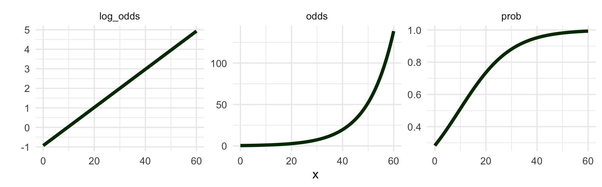
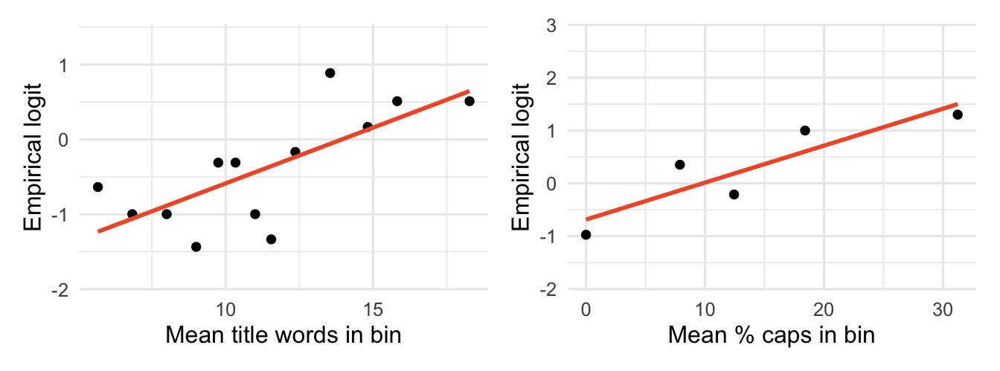
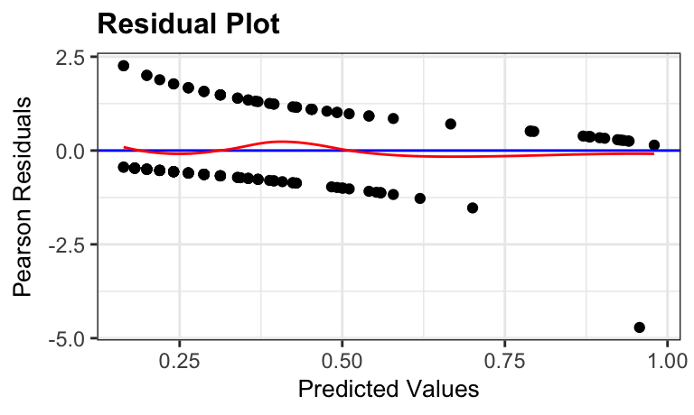
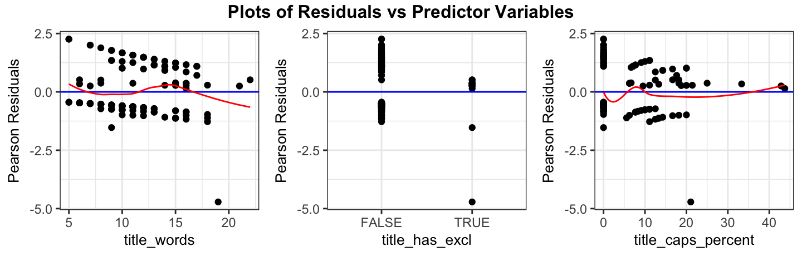
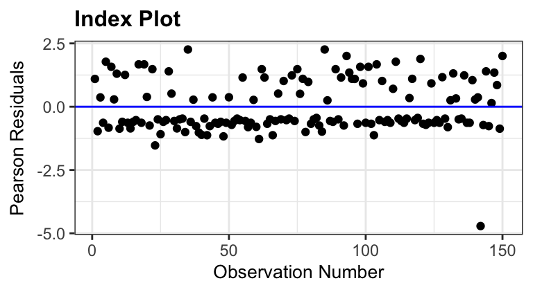

| term | estimate | std. error | z | p-value |
|---|---|---|---|---|
| Intercept | -2.232 | 0.672 | -3.32 | <0.001 |
| title_words | 0.120 | 0.058 | 2.07 | 0.038 |
| title_has_exclTRUE | 1.998 | 0.849 | 2.35 | 0.019 |
| title_caps_percent | 0.050 | 0.029 | 1.69 | 0.091 |
Day 20: Inference for logistic regression
Last time we introduced logistic regression and learned to interpret the slope. Today:
- Logistic regression as a generalized linear model
- Inference for a single coefficient (Wald tests and confidence intervals)
- Checking conditions with empirical logit plots and Pearson residuals
Running example: Fake News. Our goal is to explain whether an article is fake (type_num = 1) using
title_words: number of words in the titletitle_has_excl: whether the title has an exclamation pointtitle_caps_percent: percent of the title in capital letters
Warm up: Write the fitted model on the log-odds scale.
Fitted regression model: 3 scales

NoteGeneralized linear models
Both linear regression and logistic regression have three parts:
- Linear predictor: \(\eta = \beta_0 + \beta_1 x_1 + \cdots + \beta_p x_p\)
- Link function: connects \(\eta\) to the mean of \(Y\), \(\mu = g(\eta)\)
- Response distribution: the distribution of \(Y\) with mean \(\mu\)
Maximum likelihood (ML) estimation
In linear regression we found the \(\hat\beta\)’s that minimized the sum of squared errors. The coefficients in logistic regression are estimated by finding the \(\widehat{\beta}_0, \ldots, \widehat{\beta}_p\) that maximize the probability of the observed outcomes (called the Likelihood)
\[L(\beta) = P(Y_1 = y_1, \ldots Y_n = y_n | \beta, X) = \prod_{i=1}^{n} \pi(X)^{y_i} \Big[ 1 - \pi(X) \Big]^{1- y_i}\]
where
\[\pi(X) = \dfrac{e^{\beta_0 + \beta_1 X_1 + \cdots + \beta_p X_p}}{1 + e^{\beta_0 + \beta_1 X_1 + \cdots + \beta_p X_p}}\]
If the sample is large and the model is correct, the ML estimators are
- essentially unbiased
- as precise as any other unbiased estimator
- approximately normal
That last fact is what lets us do inference.
NoteWald test for a coefficient
Hypotheses: \(H_0\): ___________________ vs. \(H_a\): ___________________
Test statistic: \(z =\) ___________________
Reference distribution: ___________________
NoteWald-based Confidence Interval
A normal-based confidence interval for ___________________ is:
\[\widehat\beta_i \pm z^*_{1-\alpha/2} \cdot SE(\widehat\beta_i)\]
To get a CI for the odds ratio, exponentiate the endpoints:
\[e^{\widehat\beta_i - z^* SE(\widehat\beta_i)} \quad \text{to} \quad e^{\widehat\beta_i + z^* SE(\widehat\beta_i)}\]
For a \(C\)-unit change in \(x\), multiply the endpoints of the CI for \(\beta_i\) by ______ before exponentiating.
Example: 95% CI for the effect of one more word in the title (\(z^* = 1.96\)).
Exponentiate the endpoints to get
Interpretation: We are 95% confident that …
Example: What about a 10-word increase in the title?
| term | estimate | conf.low | conf.high | or_low | or_high | or_low_10 | or_high_10 |
|---|---|---|---|---|---|---|---|
| title_words | 0.12 | 0.008 | 0.237 | 1.008 | 1.268 | 1.084 | 10.737 |
(Note: tidy(..., conf.int = TRUE) uses a profile-likelihood interval, so its endpoints differ slightly from the Wald interval above.)
Conditions for logistic regression
For inference to be valid we need
- Linearity: the ______________ is a linear function of the predictors
- Independence: no pairs, clusters, ordering in time or space
- Randomness: a random sample (or a randomized experiment)
If linearity fails, the model doesn’t describe the data. If independence or randomness fail, we can still interpret the coefficients, but our CIs will be too narrow and our p-values too small.
Checking linearity: empirical logits
We can’t just plot a 0/1 response against \(x\) and look for a line, and ordinary residual plots for binary data are hard to read. Instead we plot the observed log odds for groups of similar \(x\) values.
- Divide the observations into \(g\) bins of similar \(x\) values
- In each bin, count the successes and failures
- Empirical logit \(=\) \(\log\left(\dfrac{\#\text{successes} + 0.5}{\#\text{failures} + 0.5}\right)\)
- Plot the empirical logit against the mean of \(x\) in each bin and look for a straight line
Why do we add 0.5? ______________________________________

Q3. The left plot uses 13 bins of about 11 articles each. Is there evidence that the linearity condition is violated for title_words?
Q4. 92 of the 150 titles have 0% capital letters, so we couldn’t use equal-size bins for title_caps_percent (the right plot uses 5 bins chosen by hand). What do you conclude about linearity?
What to look for:
- A roughly straight trend means linearity is ______________.
- A curved trend means we should try ______________ (for example, ______________).
- Each point is based on few observations, so expect scatter. Look at the overall trend, not at individual points.
- These plots look at one predictor at a time. They don’t adjust for the other predictors, which is why we also use Pearson residuals.
Categorical predictors. For title_has_excl we calculate the empirical logit in each group:
| title_has_excl | n | fake | real | empirical logit |
|---|---|---|---|---|
| FALSE | 132 | 44 | 88 | -0.69 |
| TRUE | 18 | 16 | 2 | 1.89 |
With only two groups, there is no linearity condition to check: ________________________________.
Checking linearity after adjusting: Pearson residuals
The raw difference between the observed outcome and the fitted probability is \(y_i - \widehat\pi_i\). The Pearson residual standardizes it:
\[r_{p_i} = \frac{y_i - \widehat\pi_i}{\sqrt{\widehat\pi_i (1 - \widehat\pi_i)}}\]
For binary data the Pearson residuals fall in two curved bands (one for \(y = 0\), one for \(y = 1\)), so the individual points aren’t informative. We add a smoother:


- If the model is adequate, the smoother should be roughly a ______________ line at ______.
- There will always be some variation from the horizontal. Smoothers help us notice major flaws.
- Pearson residuals for binary data are not approximately normal, so we don’t use a QQ plot.
Q5. Do the Pearson residual plots agree with the empirical logit plots? Is there evidence of a violation of linearity?
Independence and randomness
- Independence is best assessed from the description of the data: Are the observations grouped (e.g., several articles from the same site)? Measured over time? Spatially related?
- An index plot of the residuals shows whether the data are ordered in some way (a trend or pattern across the index is a warning sign).
- Randomness: how were the articles chosen? The fake news articles were posted to Facebook in September 2016, in the run-up to the election, so we need to be careful about what population our conclusions apply to.

Q6. What does the index plot suggest about independence? What population do you think we can generalize to?
Summary
| Condition | How we check it |
|---|---|
| Linearity | |
| Independence | |
| Randomness |
- Inference for each coefficient uses a ______ test and a ______-based CI.
- Exponentiate the CI endpoints to talk about the odds ratio; multiply by \(C\) first for a \(C\)-unit change.
R function reference
| Function | Purpose |
|---|---|
glm(y ~ x, data, family = "binomial") |
Fit a binary logistic regression |
tidy(model, conf.int = TRUE) |
Coefficient table with confidence intervals |
mutate(bin = ntile(x, g)) |
Create \(g\) equal-size bins of x |
cut(x, breaks) |
Create bins from cut points you choose |
log((successes + 0.5) / (failures + 0.5)) |
Empirical logit |
resid_panel(model, plot = "resid", type = "pearson", smoother = TRUE) |
Pearson residual plot with a smoother |
resid_xpanel(model, type = "pearson", smoother = TRUE) |
Pearson residuals against each predictor |